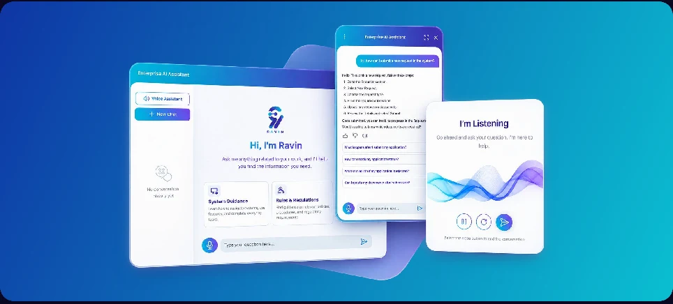
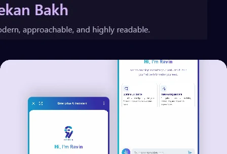
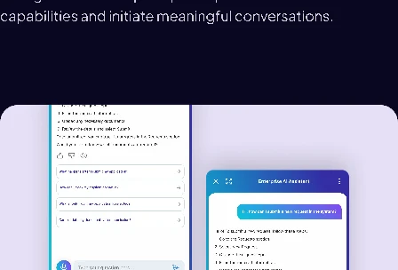
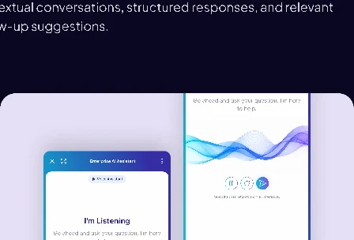
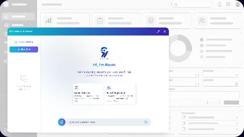
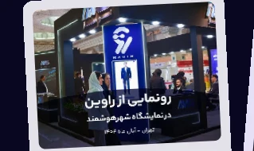
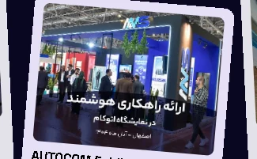
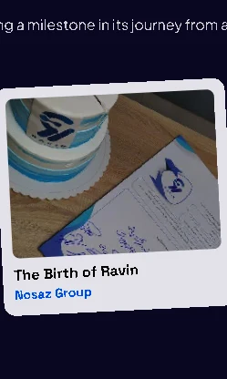

01Project Overview
Transforming an initial chatbot concept into a domain-specific AI assistant designed to guide users through complex workflows, provide reliable information, and communicate within enterprise constraints.

Timeline
2 Months
My role
Product Designer & AI Experience Designer
02My contribution across the product lifecycle
As a Product Designer, I contributed to Ravin from its initial concept, helping define not only its interface but also its purpose, capabilities, personality, and behavior. My responsibilities extended across product discovery, Agent Experience (AX), conversation design, product identity, and experience decisions within technical and organizational constraints.
- 01Discovery
- 02Definition
- 03Behavior
- 04Design
- 05Delivery
Uncovering real support needs
Investigated how users seek help, learn complex workflows, and handle uncertainty, revealing the need for contextual assistance beyond traditional training.
03The Initial Idea
It started with a simple idea.
What if users could get instant help without leaving their workflow?
The initial concept was to build an AI-powered chatbot that could make training, support, and organizational knowledge more accessible within an enterprise product.
While the purpose was clear, the product itself was still undefined. Its capabilities, responsibilities, personality, and interaction model had yet to be established.
What we knew
- Users needed accessible training and support.
- Organizational knowledge needed to be easier to access.
- AI could provide a conversational entry point.
- Assistance should be available within the product.
What we needed to define
- The assistant’s role and capabilities.
- Its personality and communication style.
- How it should handle ambiguity and uncertainty.
- Its knowledge and responsibility boundaries.
We knew why we needed AI. But we hadn’t yet defined how it should behave.
04The Enterprise Design Challenge
Data Security
Sensitive organizational data and controlled infrastructure.
Complex Workflows
Specialized processes, terminology, and business rules.
Knowledge Boundaries
Responses limited to available and relevant knowledge.
Different User Expertise
Different needs across novice and experienced users.
On-Premise Environment
Limited dependency on external services.
Technical Feasibility
Balancing experience quality with implementation cost.
05Research & Discovery
Before defining Ravin’s experience, I investigated how users learn complex systems, resolve problems, and make decisions during their everyday work.
My goal was to understand not only what users ask, but when, why, and under what circumstances they need assistance.
User Interviews
Understanding how users learn, seek support, and navigate uncertainty in their daily work.
Stakeholder Sessions
Identifying product expectations, organizational requirements, and capability boundaries.
Competitive Analysis
Exploring conversational patterns, AI behavior, and approaches to handling uncertainty.
Behavioral Analysis
Identifying differences in user expertise, question formulation, and problem-solving behaviors.
Research Questions
- Learning & Support Behavior
- Knowledge & Context
- User Expertise
- Errors & Decision-making
Different users. Different support needs.
The assistant should adapt its response depth to the nature of the question and the user’s apparent level of expertise, rather than provide the same explanation to everyone.

The Learner
Needs help understanding terminology, system functionality, and workflow steps.
Typical questions
- How do I submit a request?
- What does this status mean?
Support needs
Step-by-step guidance · Simple explanations · Learning through examples
The Specialist
Needs assistance with complex scenarios, exceptions, business rules, and work-related decisions.
Typical questions
- What happens in this specific case?
- Which rule applies to this situation?
Support needs
Precise information · Contextual answers · Exception handling
06Research Insights
Research revealed that users’ need for assistance was shaped by their workflow, level of expertise, and the uncertainty they encountered during everyday tasks. These findings informed both Ravin’s product direction and its behavioral requirements.
Learning happens in the flow of work.
- Research finding
- Users seek help when they encounter a problem, rather than through separate training activities.
- Design implication
- Provide immediate, task-oriented guidance.
Users don’t always know what to ask
- Research finding
- Users may lack the terminology or context needed to clearly articulate their problems.
- Design implication
- Help users clarify their intent before responding.
Support needs vary across users and situations.
- Research finding
- Novice users need foundational guidance, while experienced users seek answers about complex scenarios, exceptions, and business rules.
- Design implication
- Adapt response depth, terminology, and explanation style.
Not all knowledge is documented or definitive.
- Research finding
- Organizational knowledge can be incomplete, experience-based, or dependent on specific circumstances.
- Design implication
- Establish knowledge boundaries and communicate uncertainty.
Users need guidance, not automated judgment.
- Research finding
- In sensitive situations, users often seek confirmation before making consequential decisions.
- Design implication
- Explain relevant options while preserving human judgment.
The visible error is not always the root cause.
- Research finding
- Problems may originate from incomplete or incorrect information entered earlier in a workflow.
- Design implication
- Support troubleshooting and guide users toward the underlying issue.
These findings, combined with competitive analysis and stakeholder discussions, helped me identify critical interaction scenarios and translate them into behavioral requirements.
Rather than designing only for successful conversations, I began defining how Ravin should respond to ambiguity, uncertainty, errors, and situations beyond its capabilities.
This became the foundation of Ravin’s Agent Behavioral Specification.
Understanding what users need is only half the challenge. Designing how AI responds to those needs is the other half.
07Defining the Agent
Before designing the interface, I needed to define what kind of assistant Ravin should be, what responsibilities it should take on, and where its role should end.
The goal was to create a knowledgeable work companion that helps users navigate complex processes without replacing their expertise or decision-making authority.
Ravin
Enterprise AI Assistant
A knowledgeable and reliable companion for everyday work.
Archetype · The Knowledgeable Guide
An expert companion that informs, explains, and guides.
Personality · Professional & Approachable
Calm, patient, precise, and respectful.
Communication · Natural & Contextual
Clear language adapted to the user’s question and expertise.
Relationship with users · A Guide, Not an Authority
Supports informed decisions while preserving human judgment.
Purpose
Inform, Guide, Educate
Make organizational and domain knowledge accessible. Help users navigate processes and resolve uncertainty, and support learning through contextual explanations.
Capability Map
What Ravin should do
- Answer domain-specific questions
- Explain systems and workflows
- Clarify ambiguous requests
- Provide contextual guidance
- Explain relevant rules and regulations
- Communicate knowledge limitations
What Ravin should not do
- Invent missing information
- Answer unrelated questions
- Expose sensitive organizational data
- Make decisions on behalf of users
- Execute unsupported actions
- Promise unavailable capabilities
Tone of Voice
08Designing Agent Behavior
Defining Ravin’s role, personality, and capabilities was only the foundation. The next challenge was translating these principles into consistent behavior across real-world interactions.
I developed a behavioral design specification to define when the assistant should respond, clarify, guide, acknowledge uncertainty, or step back, making AI behavior an intentional part of the product experience.
- User Action
- Predefined System Logic
- Predictable Output
Designing interactions
Defining how users interact with a system that follows predefined logic.
- User Intent
- Agent Behavior · Context · Scope · Knowledge
- Answer · Clarify · Guide · Step back
Designing behavior
Defining how an intelligent system should respond across different contexts and conditions.
Behavioral Scenario
- 01Conversation Start
- 02Ambiguous Requests
- 03Conversation Continuation
- 04Expert Tone
- 05Empathy
- 06System Feedback
- 07Trust Building
- 08Complex Questions
- 09Unknown Answers
- 10Out-of-Scope Requests
Ambiguous Requests
Trigger
The request contains insufficient information or multiple possible meanings.
Expected behavior
Ask one focused clarifying question instead of assuming the user’s intent.
Response example
Why isn’t it working?
Agent Behavioral Logic
Ask a clarifying question
Return to: Understand the intent
Communicate scope limitations
Acknowledge uncertainty
08Product Decisions & Trade-offs
Not every valuable idea should ship
During the design process, I proposed a proactive error follow-up capability that would allow Ravin to track unresolved issues and notify users when a resolution or update became available.
Although the concept addressed a meaningful user need, its implementation required additional infrastructure and integrations. Following a technical evaluation, we decided to defer the capability and preserve it as a future product opportunity.
- Identifythe issue
- Trackits status
- Detectan update
- Notifythe user
Decision · Defer the feature
Prioritize feasible capabilities for the initial release.
Trade-off · Technical complexity
Additional infrastructure and development effort.
User value · Reduce uncertainty
Minimize repeated follow-ups.
09Building Ravin’s Visual Identity
I developed Ravin’s visual identity to reflect its role as a knowledgeable, approachable, and reliable enterprise assistant.
The visual language balances the professionalism of enterprise software with the approachable character of a conversational AI experience.
Visual language
Deep Indigo
Professionalism, stability, and trust.
Electric Cyan
Technology, intelligence, and accessibility.
Aa Bb Cc · Inter
Clear, neutral, and interface-oriented.
Yekan Bakh
Modern, approachable, and highly readable.
Guided Entry Point
Helping users understand what to ask.
Users may not always know how to formulate their questions. Categorized starter prompts help them discover relevant capabilities and initiate meaningful conversations.

Conversational Experience
Supporting a continuous dialogue, not isolated answers.
The chat experience translates Ravin’s behavioral principles into contextual conversations, structured responses, and relevant follow-up suggestions.

Voice Experience
Making assistance more natural and accessible.
I designed voice interactions around clarity, natural communication, and visible system states. Listening, processing, speaking, and recovery states were designed to help users understand what the assistant is doing throughout the conversation.

In-Product Assistance
Supporting users without interrupting their work.
Rather than requiring users to switch between their workspace and a separate support environment, I designed Ravin as a persistent, movable assistant that remains accessible while users continue their tasks. This directly addressed a key research finding: users need guidance at the moment they encounter uncertainty.

10Measuring Future Impact
Since post-launch performance data was not available, I propose an evaluation framework that combines product analytics, user feedback, and behavioral evaluation.
- Evaluation area
- Adoption
- Key metric
- Activation Rate
- Measurement method
- Event tracking and funnel analysis
- Evaluation area
- Engagement
- Key metric
- Repeat Usage Rate
- Measurement method
- Cohort analysis
- Evaluation area
- Effectiveness
- Key metric
- Self-service Resolution Rate
- Measurement method
- Conversation-level feedback and support data
- Evaluation area
- Response Quality
- Key metric
- Response Helpfulness
- Measurement method
- In-product feedback
- Evaluation area
- Behavioral Reliability
- Key metric
- Behavioral Compliance
- Measurement method
- Scenario-based AI evaluation
- Evaluation area
- Workflow Efficiency
- Key metric
- Time to Resolution
- Measurement method
- Task-based testing and event tracking
11Ravin in the Real World
Ravin was showcased at AUTOCOM and the Smart City Exhibition in 2025, marking a milestone in its journey from an initial concept to an enterprise AI product presented to a wider audience.


